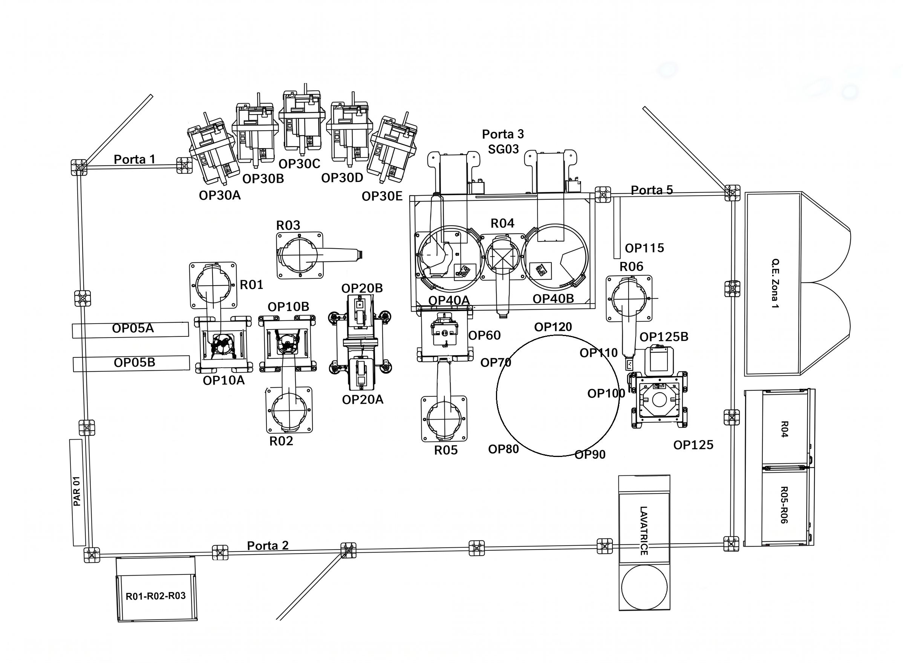

ZONA 1 - Layout interattivo
Clicca sulle scritte del layout oppure usa il menu “Seleziona punto”.
Locale
Su telefono la mappa si adatta alla larghezza. Usa +/− per ingrandire. Le aree cliccabili sono state ridotte alla grandezza delle scritte: attiva “Mostra aree cliccabili” solo per controllare l’allineamento.
